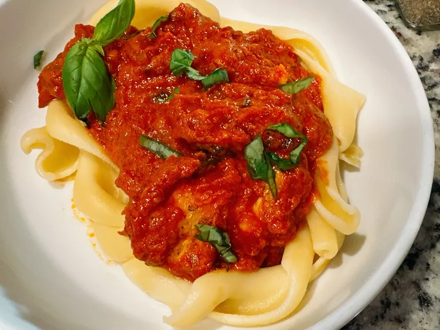

Tomato Basil Chicken

Flavourful Basil Chicken
Ingredients
- 1 1/2 pounds skinless, boneless chicken breasts
- 1 teaspoon salt
- 1 teaspoon paprika
- 1 teaspoon Italian seasoning
- 3 tablespoons extra-virgin olive oil
- 1 shallot, chopped
- 4 cloves garlic, minced
- 2 tablespoons tomato paste
- 1 (28 ounce) can crushed tomatoes
- 1/2 cup chicken broth
- 1/2 teaspoon Calabrian chili paste
- salt to taste
- 1/4 cup fresh basil, roughly chopped
- 1/2 cup half-and-half
Steps
- Cut chicken breasts in half horizontally to create cutlets. Season chicken with salt, Italian seasoning, and paprika.
- Heat 2 tablespoons oil in a large skillet over medium-high heat. When oil is hot, brown chicken on both sides until golden brown, about 3 minutes per side. Remove chicken from skillet and keep warm.
- Add remaining olive oil to the same skillet, add shallot, and sauté until soft, about 3 minutes. Add garlic and cook until fragrant, about 1 minute. Stir in tomato paste, and cook for 2 minutes.
- Add crushed tomatoes and chicken broth, scraping up any browned bits from the bottom of the skillet. Simmer until sauce is reduced and slightly thickened, 10 to 15 minutes. Season the sauce with Calabrian chile paste and salt; stir in basil and half-and-half.
- Return chicken with any accumulated juices to the skillet, and simmer chicken in the sauce until an instant-read thermometer, inserted near the center of chicken, reads 165 degrees F (74 degrees C), 3 to 5 minutes. Remove the skillet from the heat and serve immediately.